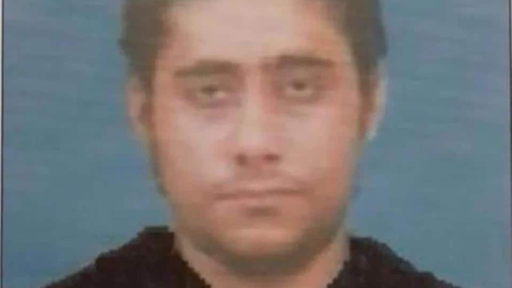

China's Refusal to Label 26/11 Plotter a Terrorist
Image Credits https://www.hindustantimes.com/india-news/china-blocks-us-india-move-to-designate-let-operative-sajid-mir-as-global-terrorist-at-un-security-council-101687287581241.html
The 2008 Mumbai attacks, also referred to as 26/11, shook the world and left a long-lasting impact on India. The coordinated terrorist attacks lasted for three days and claimed the lives of 166 people while injuring over 300. The attack was carried out by a group of ten Pakistani terrorists belonging to the Lashkar-e-Taiba (LeT) militant group.
As India continues to seek justice for the victims of the Mumbai attacks, China's recent refusal to label one of the suspects as a terrorist has raised questions about international cooperation against terrorism.
Examples
Hafiz Saeed, the founder of Lashkar-e-Taiba, was designated as a terrorist by the United Nations in 2008. However, Masood Azhar, the founder of another militant group called Jaish-e-Mohammed (JeM), has consistently evaded designation as a terrorist by the UN due to China's veto power in the Security Council.
In 2019, China again blocked India's bid to designate Masood Azhar as a global terrorist in the UN Security Council. This move was widely criticized by the international community and India for China's lack of commitment to combating terrorism.
Case Studies
The case of China's refusal to label Zaki ur Rehman Lakhvi, one of the main planners of the Mumbai attacks, as a terrorist is another example of the lack of international cooperation in the fight against terrorism.
In 2016, India had submitted a dossier containing evidence of Lakhvi's involvement in the terrorist attack. Despite this, China refused to designate Lakhvi as a terrorist, citing lack of evidence. In response, India criticized China's stance and the international community questioned China's commitment to counter-terrorism.
Conclusion
- China's refusal to designate individuals responsible for terrorist attacks as terrorists has raised questions about its commitment to counter-terrorism.
- It highlights the need for greater international cooperation in combating the global menace of terrorism.
- India and the international community must continue to hold China accountable for its stance on terrorism and push for stronger action against those responsible for such heinous acts.
Curated by Team Akash.Mittal.Blog
Share on Twitter Share on LinkedIn